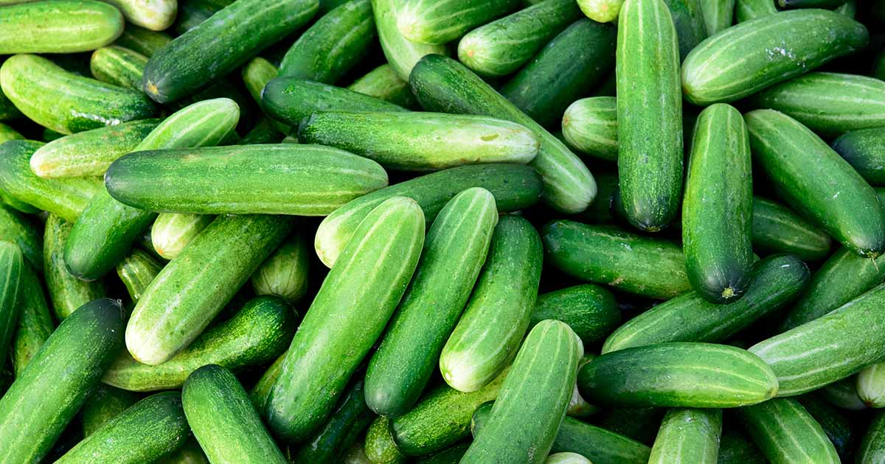
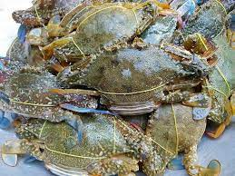

Gạo
Gạo Phka Rumduol
Phka Rumduol là một loại gạo cấp nhất ở Campuchia.Gạo này đa số trồng ở tỉnh Siem Riep,Bat Dom Bong... . Hiện nay Phka Rumduol là một loại gạo nổi tiếng của Campuchia, đã được chọn là “Gạo ngon nhất thế giới” tại ba Hội nghị Gạo thế giới của The Rice Trader liên tiếp— Bali vào năm 2012, Hồng Kông vào năm 2013 và Phnom Penh vào năm 2014. Phka Rumduol được phát triển thông qua sự hỗ trợ từ Dự án "Cambodia-IRRI-Australia". Nó được phát hành dưới dạng nhiều loại bởi CARDI vào năm 1999.
Gạo Phka Malis
Hiện nay Phka Malis là một loại gạo khá nổi tiếng của Campuchia.hiện nay gạo Phka Malis dã xuất khẩu đi thị trưởng thế giới tỷ tôn trong mỗi năm.Thị trường xuất khẩu gạo Phka Malis của Campuchia lớn nhất là Trung Quốc. Gạo Phka Malis có thể bán trong giá một cân khoảng 30000Đ.
Gạo Neang Minh
Hiện nay Phka Malis là một loại gạo khá nổi tiếng của Campuchia.hiện nay gạo Phka Malis dã xuất khẩu đi thị trưởng thế giới tỷ tôn trong mỗi năm.Thị trường xuất khẩu gạo Phka Malis của Campuchia lớn nhất là Trung Quốc. Gạo Phka Malis có thể bán trong giá một cân khoảng 20000Đ.
Gạo Sen Pidao
Gạo Sen Pidao là một loại gạo đặc sản của Campuchia, có hương thơm nhẹ nhàng và vị ngọt dịu. Gạo Sen Pidao còn được gọi là gạo Sen Kro Ob. Gạo Sen Pidao được trồng ở các tỉnh Battambang, Pursat, Kampong Chhnang và Banteay Meanchey1. Gạo Sen Pidao có giá cao hơn gạo Jasmine của Việt Nam và gạo Hommali của Thái Lan. Gạo Sen Pidao được nhiều người tiêu dùng ưa chuộng vì ngon, thơm và hữu cơ Gạo Phka Malis có thể bán trong giá một cân khoảng 15000Đ.
Rau

Dưa
Cây trồng dưa là một nhóm cây trồng có quả hình bầu dục hoặc tròn, có vỏ màu xanh hoặc vàng, có thịt quả màu đỏ hoặc vàng, chứa nhiều nước và hạt đen1. Có nhiều loại cây trồng dưa, như dưa tây, dưa leo, dưa hấu…234. Các loại cây trồng dưa thường ưa khí hậu ấm áp, khô ráo, đủ nắng và gió45. Các loại cây trồng dưa có nhiều công dụng trong ẩm thực và y học.Có thế bán trong một cân giá 15000Đ.
Hạt Tiêu
Hạt tiêu là một cây trồng mà nhân dân đã trồng ở tỉnh Kompot,Mondal Krri,.....Hạt tiêu ngon nhất của campuchia là Hạt tiêu Kompot ,mà đã dược xuất khẩu bán trên thị trưởng thế giới như là Trung Quốc,Nhật Bản,Mỹ và Châu Âu chẳng hạn. Nhu cầu đối với các sản phẩm quốc tế đã tăng lên kể từ đó. Tuy nhiên, khối lượng xuất khẩu hàng năm vẫn còn nhỏ, với 58 tấn được sản xuất trên 25 hata cho năm 2014. hiện nay chỉnh phú đã khuyến khích nông dân trồng hạt tiêu để xuất khẩu càng nhiều trên thế giới.

Bắp Cải
Bắp cải là một loại rau có nguồn gốc ôn đới, thuộc họ Cải. Bắp cải có nhiều lợi ích cho sức khỏe, như chống oxy hóa, bảo vệ tim và giảm cholesterol³. Bắp cải cũng là nguyên liệu cho nhiều món ăn ngon, như bắp cải xào, bắp cải cuốn thịt, bắp cải muối chua... . Bắp cải đa số trồng ở khu vực đất đồng bằng của campuchia.Có thế bán trong một cân giá 20000Đ.
Xà Lách
Cây xà lách là một loại rau ăn lá thuộc họ Cúc, có nhiều giống khác nhau, như xà lách Mỹ, xà lách Romaine, xà lách bơ…12. Cây xà lách thường được trồng trong vụ đông xuân, ưa khí hậu mát mẻ và đất thoát nước tốt3. Cây xà lách có nhiều công dụng trong ẩm thực và dược liệu. Cây xà lách đa số trồng ở khu vực đất đồng bằng của campuchia.Có thế bán trong một cân giá 25000Đ.
Hoa Quả
Sâu Riêng
Sâu Riêng là một cây trồng nổi ăn quả nổi tiếng nhất của Campuchia.Sâu riêng mà ngon nhất có trồng trong tỉnh KomPot,KomPongCham,Tbuong Khmum,Kos Kong,BatDomBong. Sâu Riêng là một sản phẩm tự nhiên mà người Campuchia thích ăn nhưng giá cũng đắt một cân khoảng 200000Đ .
Cam Pursat
Cam Pursat là loại cây trồng phổ biến được bà con nông dân một số tỉnh trong cả nước trồng, nhưng cam Pursat rất được ưa chuộng, cam Pursat được trồng nhiều ở tỉnh Battambang. Cam Pursat có đặc điểm riêng, từ vụ thu hoạch đến mùa vụ, cam Pursat luôn có nhu cầu cao trên thị trường, đặc biệt là ở thủ đô Phnôm Pênh. Mức độ ủng hộ của người tiêu dùng địa phương ngày càng tăng khi quá trình đăng ký chỉ dẫn địa lý cho cam ở Pursat, tỉnh Battambang được tiếp tục.
Chôm Chôm
Chôm chôm là một cây trồng ăn quả đa số trồng ở tỉnh KomPongCham,Kompot,KosKong, PaiLin, Mondalkiri trong nước Campuchia.Chôm chôm ngon nhất là trồng ở tỉnh Kompongcham. Chôm chôm có thể bán trong một cân giá khoảng 50000Đ.

Chuối
chuối vàng được trồng lần đầu tiên vào năm 2018 trên 411 ha. Nhưng đến nay đã tăng lên 1.063 ha. Diện tích thu hoạch là 662 ha, năng suất 43 tấn/ha. Mỗi năm, tỉnh Kampot xuất khẩu hơn 200.000 tấn chuối vàng ra thị trường nước ngoài. Cần lưu ý rằng trong 10 tháng đầu năm 2022, Campuchia đã xuất khẩu 325.859 tấn chuối tươi ra thế giới, trong đó xuất khẩu nhiều nhất sang Trung Quốc 293.060 tấn, Việt Nam 32.799 tấn và 10 tấn sang Nhật Bản.
Thịt
Thịt Gà
Thịt gà là thịt gia cầm phổ biến trên thế giới. Nó có nhiều lợi ích cho sức khỏe như cung cấp protein và nhiều dưỡng chất quan trọng khác như phốt pho, axit amin1. Nếu bạn đang tìm kiếm cách chế biến thịt gà, bạn có thể tham khảo các công thức tại Thịt gà có thể bán trong giá một cân khoảng 150000Đ.
Thịt Lợn
Thịt lợn là loại thực phẩm rất phổ biến trên thế giới và được sử dụng theo nhiều cách khác nhau trong nhiều nền văn hoá và tôn giáo khác nhau1. Nếu bạn đang tìm kiếm cách chế biến thịt lợn, bạn có thể tham khảo các công thức tại Thịt lợn có thể bán trong giá một cân khoảng 120000Đ.
Thịt Bò
Thịt bò là thịt của con bò (thông dụng là loại bò thịt). Nó là một trong những loại thực phẩm có giá trị dinh dưỡng cao và có chứa nhiều amino acid cần thiết, các chất béo, chất khoáng và vitamin1. Nếu bạn đang tìm kiếm cách chế biến thịt bò, bạn có thể tham khảo các công thức tại Thịt bò có thể bán trong giá một cân khoảng 250000Đ.
Thịt Vịt
Thịt vịt là thịt của con vịt. Nó có nhiều dưỡng chất như protein, vitamin B12 và sắt. Nếu bạn đang tìm kiếm cách chế biến thịt vịt, bạn có thể tham khảo các công thức tại Thịt vịt có thể bán trong giá một cân khoảng 150000Đ.
Hải Sản
Tôm
Tôm là một loại hải sản giàu chất dinh dưỡng như protein, vitamin và khoáng chất1. Nếu bạn đang tìm kiếm cách chế biến tôm, bạn có thể tham khảo các công thức tại Tôm có thể bán trong giá một cân khoảng 250000Đ.
Mực
Mực là một loại hải sản phổ biến trên thế giới và có nhiều dưỡng chất như protein, vitamin và khoáng chất1. Nếu bạn đang tìm kiếm cách chế biến mực, bạn có thể tham khảo các công thức tại 2 và Mực có thể bán trong giá một cân khoảng 150000Đ.

Cua
Cua biển là một loại hải sản phổ biến trên thế giới. Nó có nhiều dưỡng chất như protein, vitamin và khoáng chất. Cua có thể bán trong giá một cân khoảng 200000Đ.
Hàu
Hàu là một loại hải sản phổ biến trên thế giới và có nhiều dưỡng chất như protein, vitamin và khoáng chất1. Nếu bạn đang tìm kiếm cách chế biến hàu, bạn có thể tham khảo các công thức tại 2 Hàu thể bán trong giá một cân khoảng 100000Đ.